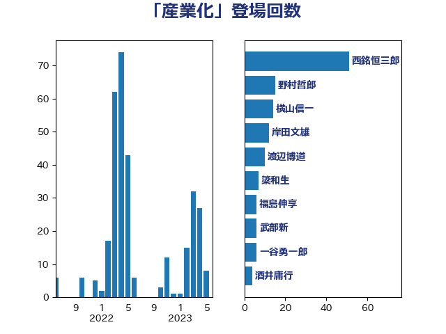

単語「産業化」

| 西銘恒三郎 | 自由民主党 | 51 回 |
| 野村哲郎 | 自由民主党 | 15 回 |
| 横山信一 | 公明党 | 14 回 |
| 岸田文雄 | 自由民主党 | 12 回 |
| 渡辺博道 | 自由民主党 | 10 回 |
| 簗和生 | 自由民主党 | 7 回 |
| 福島伸享 | 無所属 | 6 回 |
| 武部新 | 自由民主党 | 6 回 |
| 一谷勇一郎 | 日本維新の会 | 6 回 |
| 酒井庸行 | 自由民主党 | 4 回 |
| 漆間譲司 | 日本維新の会 | 4 回 |
| 中川宏昌 | 公明党 | 4 回 |
| 紙智子 | 日本共産党 | 3 回 |
| 梅谷守 | 立憲民主党 | 3 回 |
| 小沼巧 | 立憲民主党 | 3 回 |
| 加藤竜祥 | 自由民主党 | 3 回 |
| 保岡宏武 | 自由民主党 | 3 回 |
| 住吉寛紀 | 日本維新の会 | 3 回 |
| 中野洋昌 | 公明党 | 3 回 |
| 長友慎治 | 国民民主党 | 2 回 |
| 鈴木俊一 | 自由民主党 | 2 回 |
| 野間健 | 立憲民主党 | 2 回 |
| 野上浩太郎 | 自由民主党 | 2 回 |
| 藤木眞也 | 自由民主党 | 2 回 |
| 神田潤一 | 自由民主党 | 2 回 |
| 浅田均 | 日本維新の会 | 2 回 |
| 柴田巧 | 日本維新の会 | 2 回 |
| 末松信介 | 自由民主党 | 2 回 |
| 岬麻紀 | 日本維新の会 | 2 回 |
| 勝目康 | 自由民主党 | 2 回 |
| 仁木博文 | 無所属 | 2 回 |
| 下野六太 | 公明党 | 2 回 |
| 高木宏壽 | 自由民主党 | 1 回 |
| 金子恵美 | 立憲民主党 | 1 回 |
| 野中厚 | 自由民主党 | 1 回 |
| 輿水恵一 | 公明党 | 1 回 |
| 角田秀穂 | 公明党 | 1 回 |
| 西野太亮 | 自由民主党 | 1 回 |
| 菊田真紀子 | 立憲民主党 | 1 回 |
| 若林健太 | 自由民主党 | 1 回 |
| 若松謙維 | 公明党 | 1 回 |
| 秋葉賢也 | 自由民主党 | 1 回 |
| 石井拓 | 自由民主党 | 1 回 |
| 田村智子 | 日本共産党 | 1 回 |
| 田名部匡代 | 立憲民主党 | 1 回 |
| 泉健太 | 立憲民主党 | 1 回 |
| 池畑浩太朗 | 日本維新の会 | 1 回 |
| 横沢高徳 | 立憲民主党 | 1 回 |
| 梅村みずほ | 日本維新の会 | 1 回 |
| 柳ヶ瀬裕文 | 日本維新の会 | 1 回 |
| 松野博一 | 自由民主党 | 1 回 |
| 本田顕子 | 自由民主党 | 1 回 |
| 新妻秀規 | 公明党 | 1 回 |
| 庄子賢一 | 公明党 | 1 回 |
| 平口洋 | 自由民主党 | 1 回 |
| 小野泰輔 | 日本維新の会 | 1 回 |
| 宮路拓馬 | 自由民主党 | 1 回 |
| 宮崎雅夫 | 自由民主党 | 1 回 |
| 奥下剛光 | 日本維新の会 | 1 回 |
| 勝俣孝明 | 自由民主党 | 1 回 |
| 冨樫博之 | 自由民主党 | 1 回 |
| 佐藤啓 | 自由民主党 | 1 回 |
| 伊藤忠彦 | 自由民主党 | 1 回 |
| おおつき紅葉 | 立憲民主党 | 1 回 |